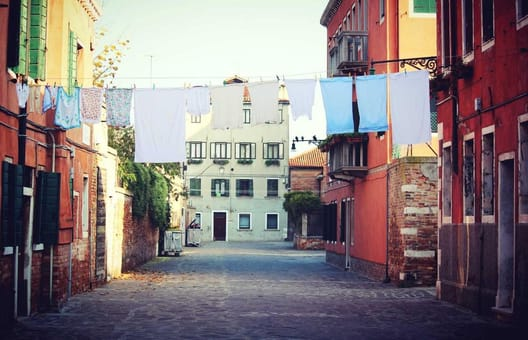

Your morning edition in five minutes. ͏ ͏ ͏ ͏ ͏ ͏ ͏ ͏ ͏ ͏ ͏ ͏ ͏ ͏ ͏ ͏ ͏ ͏ ͏ ͏ ͏ ͏ ͏ ͏ ͏ ͏ ͏ ͏ ͏ ͏ ͏ ͏ ͏ ͏ ͏ ͏ ͏ ͏ ͏ ͏ ͏ ͏ ͏ ͏ ͏ ͏ ͏ ͏ ͏ ͏ ͏ ͏ ͏ ͏ ͏ ͏ ͏ ͏ ͏ ͏
Saturday 8 November 2026 · Edition 214 · Morning The Daily Fold |
Cities How a dozen neighbours turned empty lanes into the most walked corner of town, without a plan, a budget or permission. By Ines Marlowe · 9 min read |
|
 Design A short history of the most popular colour nobody chose. |
Weather Trains, schools and the bakery queue: the week ahead. |
|
In brief |
Libraries stay open lateSix branches add Thursday evenings from December. |
A new ferry routeMornings only for now, with bikes carried free. |
Market moves indoorsThe Sunday market takes the old tram depot until March. |
|
|
Unsubscribe · Weekday editions |
|